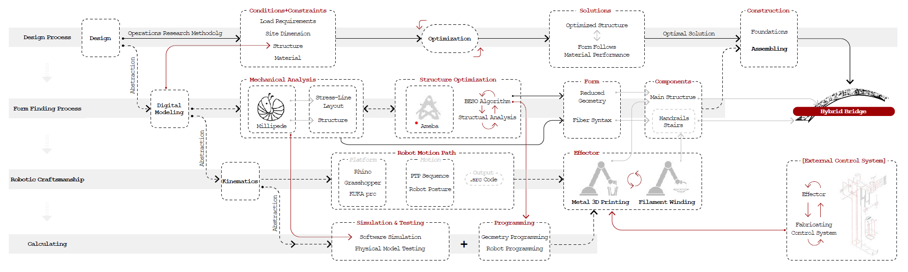

Hybrid Crafts Bridge
2019 / Digital Fabrication
Collaborator: Xiaofei Hong, Xingtai Huang, Zhongsheng Yu
Introduction
What is focused in this BRIDGE is how digital tools integrate fabrication into design. our task is to build a light, strong and durable bridge which can hold 20 people. Compared to traditional building methods, robotic fabrication and addictive manufacturing have a great potential in material and energy saving in the architecture field. This project is an exploration of two relatively recent construction methods : large scale metal 3D printing and filament winding, as well as how these two techniques work in synergy.

fig1. Component of bridge
The methodology of operations research and has been adapted into the design strategy of this project. By abstracting the calculation parts such as digital modeling and kinematics and combing them with the form finding process, this methodolgy allows us elaborate our design's personality instead of the universality.
fig2. Methodology